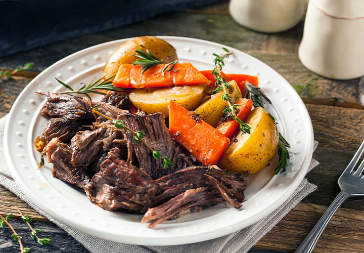

Pot Roast

Perfect Pot Roast
This all in one pot roast recipe will feed 6, needs 15 minutes of prep work, and is done in roughly 3 to 4 hours depending on the weight of the roast.
Ingredients
- Salt and freshly ground black pepper
- One 3-to-5 pound chuck roast
- 2 or 3 tablespoons of olive oil
- 2 whole onions, peeled and halved
- 6 to 8 whole carrots, unpeeled, cut into 2-inch peice
- 1 cup red wine. optional
- 3 cups beef broth
- 2 or 3 springs fresh rosemary
- 2 or 3 springs fresh thyme
Steps
- Preheat the oven to 275 degrees F.
- Generously salt and pepper the chuck roast.
- Heat the olive oil in large pot over medium-high heat. Add the halved onions to the pot, browning them on both sides. Remove the onions to a plate.
- Throw the carrots into the same very hot pot and toss them around a bit until slightly browned, about a minute or so. Reserve the carrots with the onions.
- Add more olive oil if needed and place the roast in the pot. Sear for about a minute on all sides until it is brown all over. Remove the roast to a plate.
- With the burner still on high, use either red wine or beef broth to deglaze the pot, scraping the bottom with a whisk. Place the roast back into the pot and add enough beef stock to cover the meat halfway.
- Add in the onions and the carrots, along with the fresh herbs.
- Put the lid on, then roast for 3 hours for a 3-pound roast. For a 4 to 5-pound roast, plan on 4 hours. The roast is ready when it is fall-apart tender.
Homepage